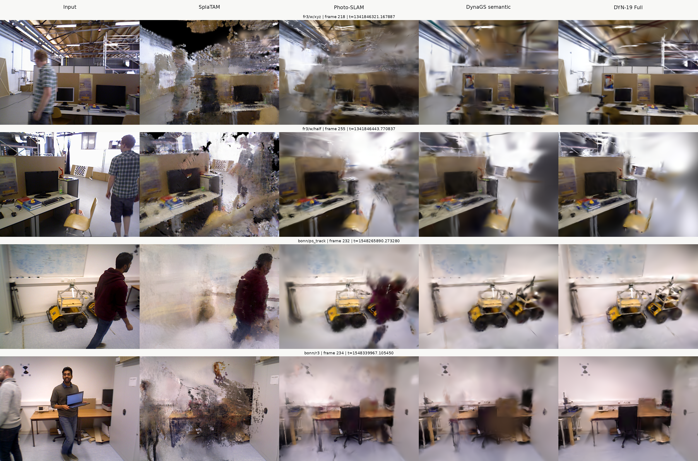

Tracking Accuracy
先给出论文层面的 broad benchmark：11 个公开报告方法加 3 个本地 DYN-19 行；再给出四方法 Protocol-300 本地共注册对比。两张表的协议边界分开标注。
Broad TUM Tracking Benchmark
11 external-report + 3 local rows| Method | w/xyz ATE ± Std | w/half ATE ± Std | w/static ATE ± Std | s/half ATE ± Std | Avg. ATE ± Std |
|---|---|---|---|---|---|
| ORB-SLAM3 EXT | 28.1 ± 12.2 | 0.31 ± 9.0 | 2.0 ± 1.1 | 2.6 ± 1.6 | 15.8 ± 6.0 |
| Dyna-SLAM EXT | 1.7 ± × | 2.6 ± × | 0.7 ± × | 2.8 ± × | 2.0 ± × |
| NICE-SLAM EXT | 113.8 ± 48.9 | × | 137.3 ± 21.7 | 93.3 ± 35.3 | 114.8 ± 33.3 |
| ESLAM EXT | 45.7 ± 28.5 | 60.8 ± 27.9 | 93.6 ± 20.7 | 3.6 ± 1.6 | 34.5 ± 13.5 |
| RoDyn-SLAM EXT | 8.3 ± 5.5 | 5.6 ± 2.8 | 1.7 ± 0.9 | 4.4 ± 2.2 | 4.1 ± 2.3 |
| SplaTAM EXT | 136.6 ± 33.7 | 185.4 ± 67.6 | 78.3 ± 23.5 | 14.1 ± 7.0 | 135.5 ± 109.6 |
| GS-SLAM EXT | 37.2 ± 9.9 | 60.0 ± 20.7 | 8.4 ± 4.1 | 7.4 ± 5.4 | 28.5 ± 10.0 |
| GassiDy EXT | 3.5 ± 1.6 | 3.7 ± 1.9 | 0.6 ± 0.3 | 2.4 ± 1.4 | 2.6 ± 1.3 |
| DGS-SLAM EXT | 4.1 ± 2.2 | 5.5 ± 2.8 | 0.6 ± 0.2 | 4.1 ± 1.6 | 3.0 ± 1.5 |
| Photo-SLAM EXT | 88.3 ± 48.9 | 33.5 ± 9.3 | 9.4 ± 6.3 | 3.2 ± 1.4 | 33.6 ± 16.3 |
| DyPho-SLAM EXT | 1.6 ± 0.8 | 2.6 ± 1.3 | 0.6 ± 0.3 | 1.6 ± 0.7 | 1.6 ± 0.7 |
| DYN-19 Semantic LOCAL | 2.3413 ± 0.0126 | 3.3792 ± 0.1985 | 0.7370 ± 0.0209 | 24.1754 ± 12.5033 | 7.6582 ± 9.5825 |
| DYN-19 MapMatched LOCAL | 2.1032 ± 0.0308 | 3.4234 ± 0.0782 | 0.7901 ± 0.0130 | 36.7750 ± 5.0208 | 10.7729 ± 15.0411 |
| DYN-19 Full LOCAL | 2.1476 ± 0.0324 | 3.6092 ± 0.0581 | 0.7297 ± 0.0225 | 4.8639 ± 0.8029 | 2.8376 ± 1.5508 |
Unit: centimeters. `[ext]` values are source-reported and not protocol-matched. Local DYN-19 rows use three seeds. No cross-protocol best/second-best claim is applied.
Local Protocol-300 Check
seed 0 · frames [0, 300) · fixed-scale SE(3)| Method | fr3/w/xyz | fr3/w/half | bonn/ps_track | bonn/r3 | Average |
|---|---|---|---|---|---|
| SplaTAM | 46.378 | 218.839 | 40.287 | 133.131 | 109.659 |
| Photo-SLAM | 45.614 | 25.011 | 92.505 | 24.531 | 46.915 |
| DynaGS semantic | 1.707 | 3.935 | 5.827 | 11.080 | 5.637 |
| DYN-19 Full | 1.667 | 3.827 | 3.889 | 5.945 | 3.832 |
Unit: centimeters. Lower is better. Exact matched pose counts are available in the source CSV.
- 01Broad surface now covers 14 methods/rows.11 rows are visibly source-labeled external reports; 3 DYN-19 rows are local three-seed results.
- 02DYN-19 Full broad average is 2.8376 cm.Its four local sequence means are 2.1476, 3.6092, 0.7297, and 4.8639 cm.
- 03Protocol-300 remains the local co-registered check.Current Full averages 3.832 cm versus semantic 5.637 cm over the frozen four-scene package.
Mapping Diagnostic
四个冻结视角均使用最终 300-observation map 和 public-GT pose 重新渲染。PSNR / SSIM 包含动态前景，只作为 full-frame diagnostic。
| Method | fr3/w/xyz | fr3/w/half | bonn/ps_track | bonn/r3 | Average |
|---|---|---|---|---|---|
| SplaTAM | 11.771 / 0.30418 | 12.436 / 0.35140 | 13.016 / 0.58047 | 14.509 / 0.49772 | 12.933 / 0.43344 |
| Photo-SLAM | 14.830 / 0.40459 | 14.936 / 0.53600 | 15.316 / 0.66293 | 14.345 / 0.63369 | 14.857 / 0.55930 |
| DynaGS semantic | 15.491 / 0.45580 | 15.447 / 0.56482 | 12.156 / 0.60761 | 14.364 / 0.65523 | 14.364 / 0.57086 |
| DYN-19 Full | 14.976 / 0.47566 | 12.009 / 0.54068 | 11.589 / 0.63100 | 13.776 / 0.65111 | 13.088 / 0.57461 |
Cell format: PSNR [dB] / SSIM. Higher is better. Bold/color cues are descriptive within this package only.

Interpretation
`fr3/w/half` 在线 held-out stride 命中 frame 256；本报告没有使用相邻帧替代，而是从最终地图严格重渲染冻结 frame 255。
End-to-End Runtime
统一报告 wall-clock end-to-end 时间。所有 DYN-19 Full cell 均使用 `/usr/bin/time` 与 status epoch delta 交叉核对。
| Method | fr3/w/xyz | fr3/w/half | bonn/ps_track | bonn/r3 | Total [s] | FPS |
|---|---|---|---|---|---|---|
| SplaTAM | 2871.197 | 1568.175 | 1477.424 | 1178.818 | 7095.614 | 0.16912 |
| Photo-SLAM | 33.429 | 29.682 | 21.810 | 16.972 | 101.894 | 11.77699 |
| DynaGS semantic | 16.589 | 16.624 | 15.245 | 12.388 | 60.845 | 19.72212 |
| DYN-19 Full | 38.769 | 38.788 | 27.135 | 24.369 | 129.061 | 9.29791 |
Qualitative Evidence
按序列检查五列真实 640×480 面板。Input、SplaTAM、Photo-SLAM、semantic 来自只读历史 Protocol-300 包；DYN-19 Full 来自本轮最终地图。
Provenance & Boundaries
核心文件可直接打开。结果根目录、输入哈希、运行状态、渲染对齐和每个 panel 的来源均登记在 evidence manifest 中。